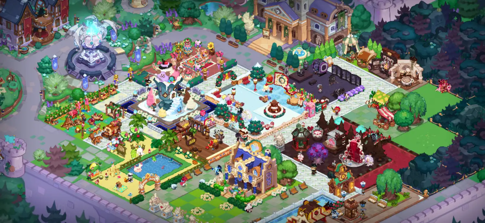
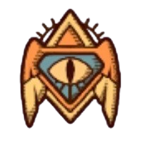
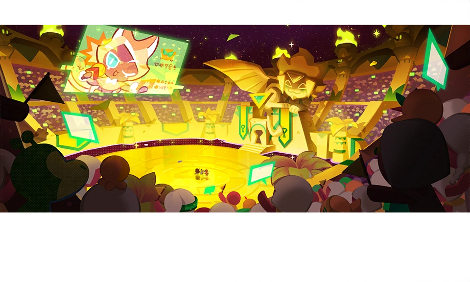

Looking for a semi-competitive PV guild?
Then join us at:
CRMobPHXS
CRMobPHXS


| Guild LV: 70 (max!) |
Guild Battle: GrandMaster I |
| Cookie Alliance: Top 3% |
Relics: 114/114 (LVL 10+) |



| Guild LV: 70 (max!) |
Guild Battle: GrandMaster I |
| Cookie Alliance: Top 3% |
Relics: 114/114 (LVL 10+) |
(Last Updated: 3 Mar 2026)